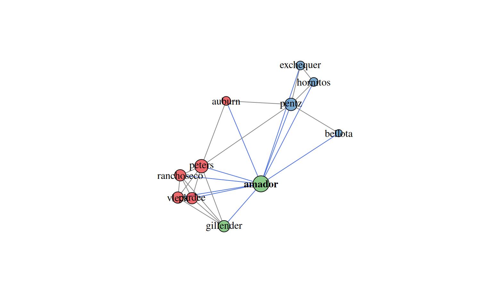
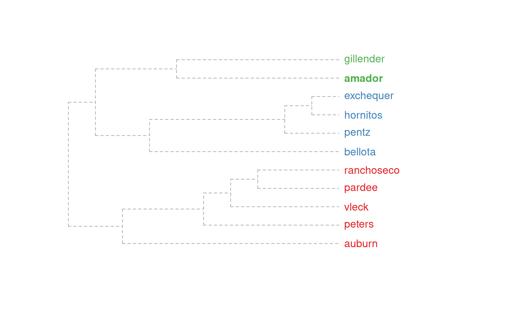
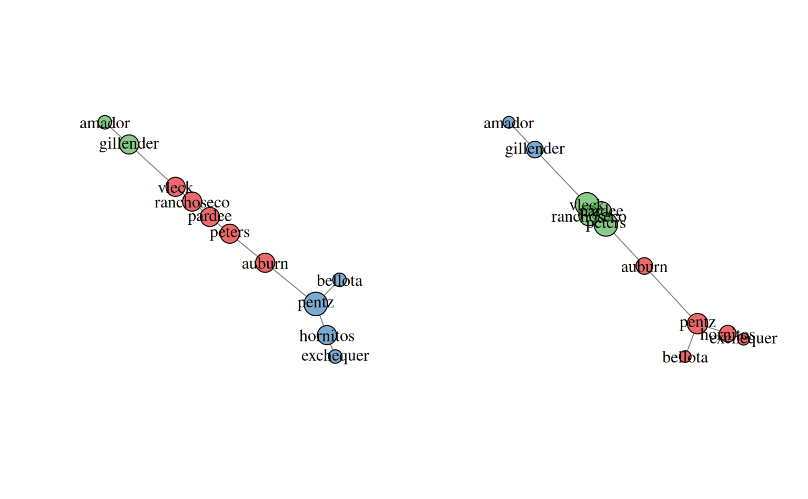
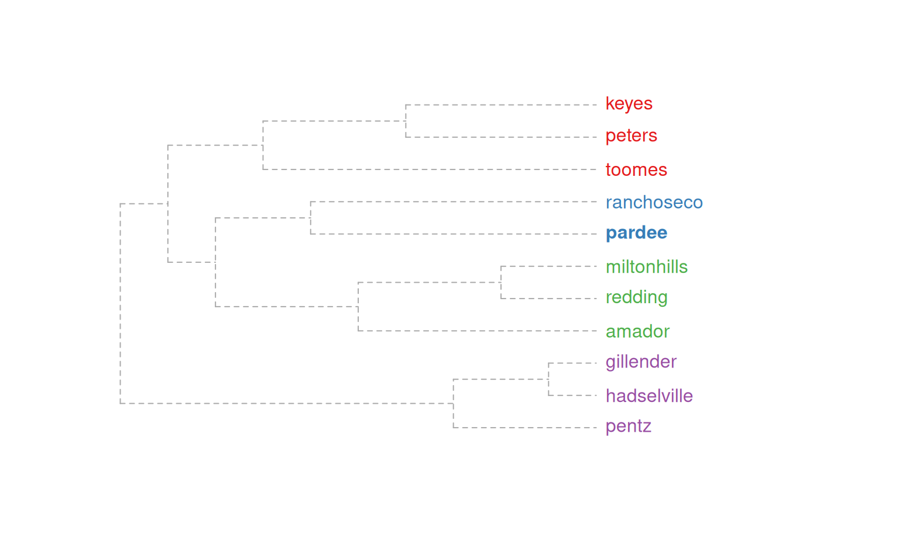
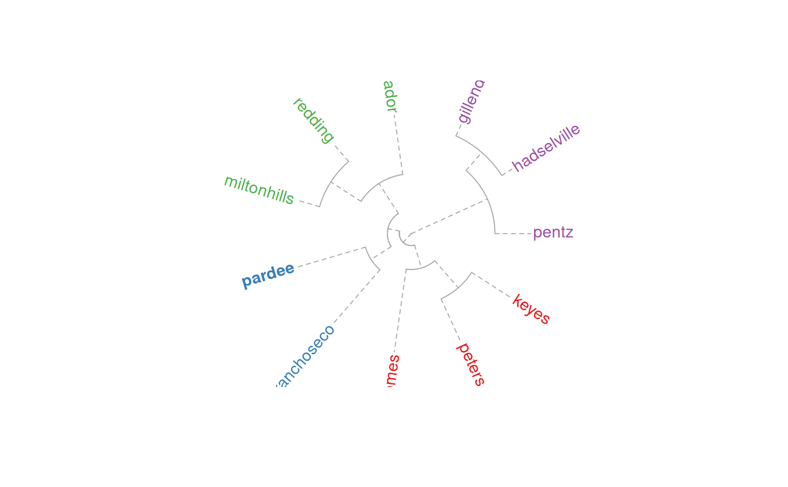
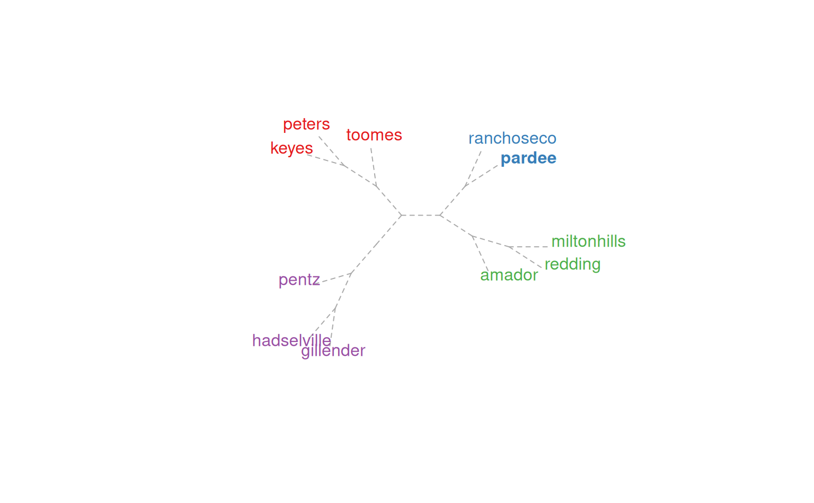

Plot a component relation graph based on an adjacency or similarity matrix.
plotSoilRelationGraph(
m,
s = "",
plot.style = c("network", "dendrogram", "none"),
graph.mode = "upper",
spanning.tree = NULL,
del.edges = NULL,
vertex.scaling.method = "degree",
vertex.scaling.factor = 2,
edge.scaling.factor = 1,
vertex.alpha = 0.65,
edge.transparency = 1,
edge.col = grey(0.5),
edge.highlight.col = "royalblue",
g.layout = igraph::layout_with_fr,
vertex.label.color = "black",
delete.singletons = FALSE,
...
)adjacency matrix
central component; an empty character string is interpreted as no central component
plot style ('network', or 'dendrogram'), or 'none' for no graphical output
interpretation of adjacency matrix: 'upper' or 'directed', see details
plot the minimum or maximum spanning tree ('min', 'max'), or, max spanning tree plus edges with weight greater than the n-th quantile specified in spanning.tree. See details and examples.
optionally delete edges with weights less than the specified quantile (0-1)
'degree' (default) or 'distance', see details
scaling factor applied to vertex size
optional scaling factor applied to edge width
optional transparency setting for vertices (0-1)
optional transparency setting for edges (0-1)
edge color, applied to all edges
edge color applied to all edges connecting to component named in s
an igraph layout function, defaults to igraph::layout_with_fr
vertex label color
optionally delete vertices with no edges (degree == 0)
further arguments passed to plotting function
an igraph graph object is invisibly returned
Vertex size is based on a normalized index of connectivity:
"degree" size = sqrt(igraph::degree(g) / max(igraph::degree(g))) * scaling.factor
"distance" size = sqrt(igraph::distance(V -> s) / max(igraph::distance(V -> s))) * scaling.factor, where distance(V->s) is the distance from all nodes to the named series, s.
Edge width can be optionally scaled by edge weight by specifying an edge.scaling.factor value. The maximum spanning tree represents a sub-graph where the sum of edge weights are maximized. The minimum spanning tree represents a sub-graph where the sum of edge weights are minimized. The maximum spanning tree is likely a more useful simplification of the full graph, in which only the strongest relationships (e.g. most common co-occurrences) are preserved.
The maximum spanning tree + edges with weights > n-th quantile is an experimental hybrid. The 'backbone' of the graph is created by the maximum spanning tree, and augmented by 'strong' auxiliary edges--defined by a value between 0 and 1.
The graph.mode argument is passed to igraph::graph_from_adjacency_matrix() and determines how vertex relationships are coded in the adjacency matrix m. Typically, the default value of 'upper' (the upper triangle of m contains adjacency information) is the desired mode. If m contains directional information, set graph.mode to 'directed'. This has the side-effect of altering the default community detection algorithm from igraph::cluster_fast_greedy to igraph::cluster_walktrap.
This function is a work in progress, ideas welcome.
if (requireNamespace("igraph")) {
# load sample data set
data(amador)
# create weighted adjacency matrix (see ?component.adj.matrix for details)
m <- component.adj.matrix(amador)
# plot network diagram, with Amador soil highlighted
plotSoilRelationGraph(m, s='amador')
# dendrogram representation
plotSoilRelationGraph(m, s='amador', plot.style='dendrogram')
# compare methods
m.o <- component.adj.matrix(amador, method='occurrence')
op <- par(no.readonly = TRUE)
par(mfcol=c(1,2))
plotSoilRelationGraph(m, s='amador', plot.style='dendrogram')
title('community matrix')
plotSoilRelationGraph(m.o, s='amador', plot.style='dendrogram')
title('occurence')
# investigate max spanning tree
plotSoilRelationGraph(m, spanning.tree='max')
# investigate max spanning tree + edges with weights > 75-th pctile
plotSoilRelationGraph(m, spanning.tree=0.75)
par(op)
# \donttest{
if(requireNamespace("curl") &
curl::has_internet() &
require(soilDB)) {
# get similar data from soilweb, for the Pardee series
s <- 'pardee'
d <- siblings(s, component.data = TRUE)
# normalize component names
d$sib.data$compname <- tolower(d$sib.data$compname)
# keep only major components
d$sib.data <- subset(d$sib.data, subset=compkind == 'Series')
# build adj. matrix and plot
m <- component.adj.matrix(d$sib.data)
plotSoilRelationGraph(m, s=s, plot.style='dendrogram')
# alter plotting style, see ?plot.phylo
plotSoilRelationGraph(m, s=s, plot.style='dendrogram', type='fan')
plotSoilRelationGraph(m, s=s, plot.style='dendrogram',
type='unrooted', use.edge.length=FALSE)
}
# }
}





